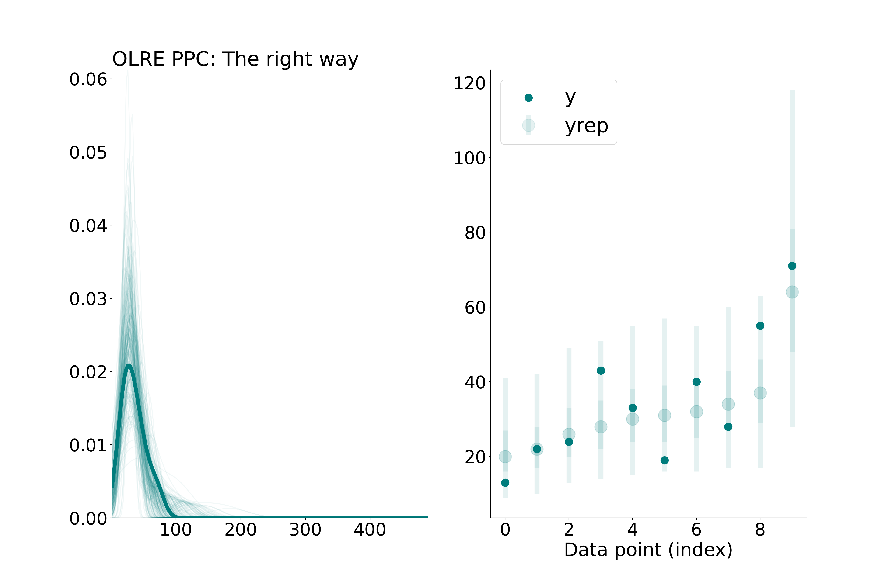

The right way to do predictive checks with observation-level random effects
Prediction
Statistics
brms
PyMC
Author
Erik J. Ringen
Published
November 16, 2024
Observation-level random effects (OLRE) are an effective way to model overdispersed count data (Harrison 2014). For example, OLREs relax the assumption of Poisson regression that the variance is equal to the mean by giving each observation \(i\) a “random intercept” (\(\nu_i\)):
By putting \(\nu\) inside the linear model, we smuggle a variance component (\(\sigma\)) into a distribution that otherwise has only a single rate parameter (this trick also works for the Binomial distribution (Harrison 2015)). OLREs are also used to capture residual correlations in multi-response models(Hadfield 2010)
Predictive checks are a routine form of model checking used to understand a model’s ability to represent the data. Unfortunately, most software for performing predictive checks will handle OLREs the wrong way by default, giving an inflated goodness-of-fit. In this post I will show you how to do it the right way, in either R + brms or Python + PyMC. Here I focus on Bayesian models, but the basic idea would also hold for checking frequentist models with software such as lme4 and glmmTMB.
The wrong way
In Bayesian workflow, we often perform posterior predictive checks, where draws from the posterior distribution are used to generate many synthetic replications of our dataset, denoted \(y_{\text{rep}}\), which are then compared to the observed values. Systematic discrepancies between the distribution of \(y_\text{rep}\) and the actual data indicate misspecification, and can suggest ways to improve our models.
To illustrate this idea, we’ll use the Oceanic toolkit complexity dataset from Michelle Kline and Robert Boyd (Kline and Boyd 2010). The response variable is the count of unique tools in a given Oceanic society (total_tools), which is predicted by the natural logarithm of population size (population). First we will fit this basic model, using priors from (McElreath 2020). For each society \(i\):
Where log(population) has been standardized to have zero mean and unit variance. Then, we will run posterior predictive checks using some off-the-shelf convenience functions.
Posterior predictive checks for basic Poisson model. (left) replicated and observed densities, (right) observation-level reps, with bars representing 50% and 90% credible intervals.
We see some indications that the data are overdispersed, relative to the model. Namely, the distribution of the observed \(y\) (total_tools) appears “flat” compared to \(y_{\text{rep}}\) in the left-side plot. We can also see in the right-side plot that several observed values fall outside of the 90% credible intervals, suggesting that the model’s predictions are too precise. So, lets try adding an OLRE to capture this overdispersion. Here’s our updated model definition:
idata_OLRE.observed_data['y'] = idata_OLRE.observed_data['y'].astype(np.float64) # Convert observed data to float for visualizationidata_OLRE.posterior_predictive['y'] = idata_OLRE.posterior_predictive['y'].astype(np.float64)fig, axes = plt.subplots(nrows=1, ncols=2, figsize=(20, 13))plot_ppc_dens(idata_OLRE.observed_data['y'], idata_OLRE.posterior_predictive['y'], axes, 0)plot_ppc_intervals(idata_OLRE.observed_data['y'], idata_OLRE.posterior_predictive['y'], axes, 1)axes[0].set_title('OLRE PPC: The wrong way', loc ="left")
Incorrect posterior predictive checks for OLRE Poisson model, using off-the-shelf convenience functions. (left) replicated and observed densities, (right) observation-level reps, with bars representing 50% and 90% credible intervals.
Looks good, right? Sadly, this is a little too good to be true. We have misled ourselves. To see why, let’s examine the posterior distribution of the OLREs in relation to the observed data:
Fitted nu parameters as a function of the natural log of the response, total tools. Bars represent 90% credible intervals.
This plot shows us that the OLREs are positively correlated with the values of the observed data. Why? These parameters are doing exactly what they are supposed to do: capture excess dispersion in the data by learning which points are higher or lower than we would expect, given their population size. To understand why this is a problem, consider out-of-sample prediction: when generating \(y_\text{rep}\) for a new observation, we don’t know \(y_{\text{test}}\) in advance, so the OLRE should convey no information about it. In our naive predictive check, we have mistakenly treated \(\nu\) as fixed, when really it should be replicated along with \(y_\text{rep}\), akin to \(\epsilon\) in a linear regression. Generating \(y_\text{rep}\) this way is referred to as “mixed replication”, because we leave the hyperparameter \(\sigma\) fixed but replicate each random effect parameter (Gelman, Meng, and Stern 1996).
The right way
The way out of this is straightforward. All we have to do is replace the fitted OLREs with new levels, denoted \(\nu_{\text{rep}}\), which are generated using posterior draws of the observation-level standard deviation \(\sigma\).
Correct posterior predictive checks for OLRE Poisson model, sampling new levels of nu (nu_rep). (left) replicated and observed densities, (right) observation-level reps, with bars representing 50% and 90% credible intervals.
fig, axes = plt.subplots(nrows=1, ncols=2, figsize=(20, 13))plot_ppc_dens(idata.observed_data['y'], pred_yrep.predictions['yrep'], axes, 0)plot_ppc_intervals(idata.observed_data['y'], pred_yrep.predictions['yrep'], axes, 1)axes[0].set_title('OLRE PPC: The right way', loc ="left")

Correct posterior predictive checks for OLRE Poisson model, sampling new levels of nu (nu_rep). (left) replicated and observed densities, (right) observation-level reps, with bars representing 50% and 90% credible intervals.
Notice that, unlike our first predictive check with no OLRE, the credible intervals of \(y_{\text{rep}}\) all contain the observed values of y. But unlike our (wrong) second predictive check, the predictions do not conform so closely to the observed values, because each \(\nu_{\text{rep}}\) is independent of \(y\). This provides us with a more realistic picture of our model’s fit. So, why do most posterior predictive functions treat OLREs the wrong way by default? Because the software doesn’t know whether \(\nu\) is an OLRE or instead a parameter that should be fixed across replications, like random effects for group differences. The latter is more common, so the default is sensible–but not necessarily safe.
There is a caveat: even if we do it the “right way”, all posterior predictive checks are overly optimistic for out-of-sample data because they use the same data for fitting and evaluation. A model that performs well in these checks might actually have poor generalization to new data due to overfitting. This issue is not specific to OLREs, but in the final section I’ll show you how to address overfitting in predictive checks.
An even better way?
Leave-one-out cross validation (LOOCV) provides a more honest assessment of predictive accuracy by holding out one observation at a time as a test point. Since the model never sees the held-out observation during fitting, these model checks will reflect true predictive performance rather than retrodiction of the sample. In the code below we will do exact LOOCV, refitting the model and making predictions for the left-out point \(N = 10\) times.
Exact LOOCV posterior predictive checks for OLRE Poisson model. Observation-level reps, with bars representing 50% and 90% credible intervals.
This predictive check is a bit less optimistic, but it still looks better than the first Poisson model we fit. This suggests that the OLRE is helpful and we have not overfit too badly. For large datasets, it becomes infeasible to refit the model for each observation, so one might turn to k-fold cross validation or Pareo-smoothed importance sampling as an approximation (PSIS-LOO) (Vehtari, Gelman, and Gabry 2017). Note that PSIS may not reliable for these types of models, and one should instead integrate out the OLREs using adaptive quadrature.
Gelman, Andrew, Xiao-Li Meng, and Hal Stern. 1996. “Posterior Predictive Assessment of Model Fitness via Realized Discrepancies.”Statistica Sinica, 733–60.
Hadfield, Jarrod D. 2010. “MCMC Methods for Multi-Response Generalized Linear Mixed Models: The MCMCglmm r Package.”Journal of Statistical Software 33: 1–22.
Harrison, Xavier A. 2014. “Using Observation-Level Random Effects to Model Overdispersion in Count Data in Ecology and Evolution.”PeerJ 2: e616.
———. 2015. “A Comparison of Observation-Level Random Effect and Beta-Binomial Models for Modelling Overdispersion in Binomial Data in Ecology & Evolution.”PeerJ 3: e1114.
Kline, Michelle A, and Robert Boyd. 2010. “Population Size Predicts Technological Complexity in Oceania.”Proceedings of the Royal Society B: Biological Sciences 277 (1693): 2559–64.
McElreath, Richard. 2020. “Statistical Rethinking: A Bayesian Course with Examples in r and Stan.” In, 2nd ed., 350. Chapman; Hall/CRC.
Vehtari, Aki, Andrew Gelman, and Jonah Gabry. 2017. “Practical Bayesian Model Evaluation Using Leave-One-Out Cross-Validation and WAIC.”Statistics and Computing 27: 1413–32.